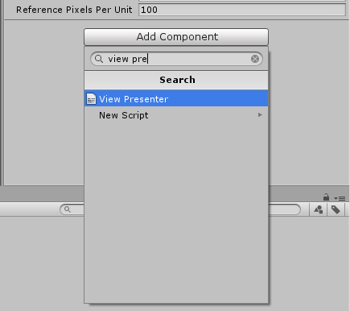
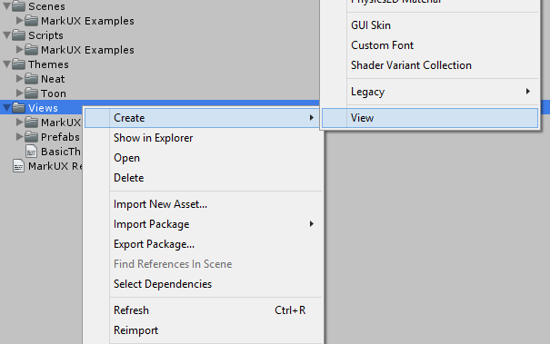
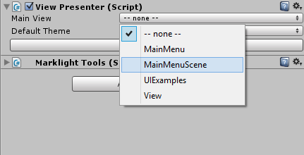
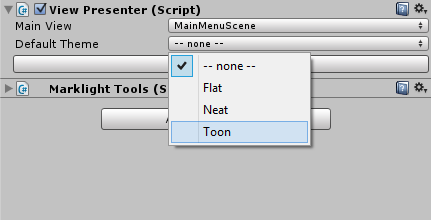
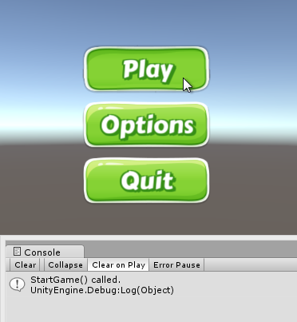
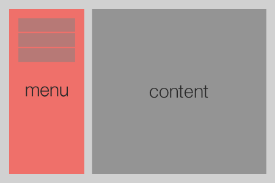
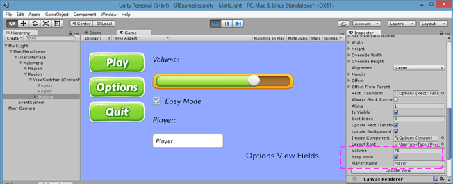

Getting Started
Introduction
MarkLight is a markup extension framework for Unity that allows programmers and designers to create game components or views, using XUML a declarative design language similar to HTML/XAML. The views you create can easily be combined, shared, re-used, styled, extended and plugged into different projects. You can build upon existing views and create advanced functionality with much less effort.This tutorial will introduce you to the features of the framework by using MarkLight to build a main menu.
Using XUML you can express the design of your UI and its relationship with the underlying game logic:
MainMenu.xml
<MainMenu>
<Group Spacing="10px">
<Button Text="Play" Click="StartGame" />
<Button Text="Options" />
<Button Text="Quit" />
</Group>
</MainMenu>
The above example shows a simple main menu view created in XUML. Programmers that are comfortable with code can express designs in a structured language. Designers should be somewhat used to the idea if they've worked with HTML before.
As the designer works on the view the programmer can work on the view's logic in what is called the view model:
MainMenu.cs
public class MainMenu : UIView
{
public void StartGame()
{
// called when user clicks on "Play" button
}
}
Together the view and the view model forms a cohesive element (simply referred to as the view) that can be combined to form more advanced views:
AnotherView.xml
<AnotherView>
<MainMenu Width="50%" Alignment="Left" />
<MainMenu Width="50%" Alignment="Right" />
</AnotherView>
This pattern of separating application logic from UI design is called MVVM (Model, View, View Model). The model part of the pattern is not relevant to this tutorial. Just know that the model refers to actual application data that is completely independent of the UI.
The views and view models interacts using data binding and view actions. But before we get into those concepts, let's get started building our first UI with MarkLight from scratch.
Installation
Start a new unity project and import the MarkLight package.
Create an empty game object and add a View Presenter component to it:

The view presenter will generate your views in the scene.
Creating a View
A view is represented by a XUML file (with the extension .xml). Create one in your project's view folder Assets/Views. To create a new view, right-click on a views-folder and select Create->View.
The file NewView.xml should now be in the Assets/Views folder. Rename the file MainMenu.xml.
Views are automatically imported and processed by the MarkLight editor extension when XUML files under any views folder gets added, deleted or changed. Views are also processed if you click on the button Reload Views on the View Presenter's inspector window. You can add view folders to be processed by modifying the configuration asset file.
MainMenu.xml
<MainMenu>
<Group Spacing="10px">
<Button Text="Play" />
<Button Text="Options" />
<Button Text="Quit" />
</Group>
</MainMenu>
When editing XUML I recommend you use an editor that supports XML validation and syntax highlighting. It will save you a lot of time by catching common formatting mistakes. If you're using Visual Studio be sure to follow this guide to get intellisense when editing XUML.
Spacing and Text are View Fields which are values that can be set on the views that changes their layout and behavior. All UIViews have the following fields that are used to do layout:
| View Field | Description |
|---|---|
| Width | Width of the view that can be specified in pixels or percentage. Set to 100% by default |
| Height | Height of the view that can be specified in pixels or percentage. Set to 100% by default. |
| Alignment | Alignment of the view: TopLeft, Top, TopRight, Left, Center, Right, BottomLeft, Bottom, BottomRight. Set to Center by default. |
| Margin | Specifies the view's margin from left, top, right and bottom. Default value: "0,0,0,0". |
| Offset | Specifies the view's offset from left, top, right and bottom. Default value: "0,0,0,0". |
| BackgroundColor | Background color overlay or tint of the view. Color values can be specified by name (Red, Blue, Coral, etc), hexcode (#aarrggbb or #rrggbb) or rgb/rgba value (1.0,0.0,0.5 or 1,1,1,0.5). Default value: (not set). |
| BackgroundImage | The background image of the view. The value is the path to the sprite asset, e.g. "Assets/MySprites/Sprite.psd". Default value: (not set) |
| BackgroundImageType | The image type of the background image: Simple, Sliced, Tiled or Filled. Default value: "Simple". |
Creating a View Model
Since we plan on having some logic in our main menu (like responding to user clicks, managing data etc.) we need to create a view model for it. We also need a view model to inform the framework that our main menu view should inherit the functionality of the UIView base class. This is required if we want to be able to position our view under a UI canvas. To create a view model add a new script MainMenu.cs, e.g. in the /Assets/Scripts/ folder.Edit the script so that it contains the following:
MainMenu.cs
using MarkLight.Views.UI;
public class MainMenu : UIView
{
}
Note that the class has the same name we gave the view in the XUML and that it inherits from UIView. All views must inherit from View or a subclass of it (like UIView) for it to be managed by the framework. For now our MainMenu view model is empty but we will add functionality to it soon. First we just want to make sure we can present it in the scene.
MarkLight relies heavily on naming conventions to simplify the workflow by removing the need to add configurations and "plumbing" logic.
Presenting the View
To present our MainMenu view we need to create a new view that will set up our scene. This view will add a UI canvas and present our MainMenu view inside it. To do this create a new view called MainMenuScene.xml and add the following XUML to it:MainMenuScene.xml
<MainMenuScene>
<UserInterface>
<MainMenu />
</UserInterface>
<EventSystem />
</MainMenuScene>
And add an empty view model:
MainMenuScene.cs
using MarkLight;
public class MainMenuScene : View
{
}
Now our scene is set up to present UI views and handle user interaction through the unity event system. To present this scene go to the inspector window for the View Presenter component. Change the Main View value to be the MainMenuScene view just created.

The scene window should now show the view being rendered. In order to make the standard views (the buttons in this case) more presentable, pick a theme.

There are three themes included in the framework. The Flat theme is the default theme and is the most practical one (recommended for mockup during development). The toon theme is a casual style with some visual flair. The Neat theme is a clean, spacious theme with a rounded look.
Themes are XUML files that modify the look & feel of views similar to style-sheets in HTML. More information in the Themes and Styles tutorial.

Next we'll add some game logic to our view.
Adding View Actions
Edit the main menu view model so that it contains the following:MainMenu.cs
public class MainMenu : UIView
{
public void StartGame()
{
Debug.Log("StartGame() called.");
}
public void Options()
{
Debug.Log("Options() called.");
}
public void Quit()
{
Debug.Log("Quit() called.");
}
}
The MainMenu view model now contains three methods. To add the methods as click handlers to the buttons in the menu add the following to the main menu XUML:
MainMenu.xml
<MainMenu>
<Group Spacing="10px">
<Button Text="Play" Click="StartGame" />
<Button Text="Options" Click="Options" />
<Button Text="Quit" Click="Quit" />
</Group>
</MainMenu>
If you run the application and click on the Play button you should see the following in the console window:

View Actions are ways to bind operational logic between view models. In this case Button exposes a View Action called Click that is triggered when the user clicks on the button. When an action is triggered all its handlers are invoked.
Before we continue adding logic to our view model I want to go over some fundamentals on UI layout.
Layout
This is the kind of layout we are going for:
MarkLight includes various views that can be used to do layout. We've seen the Group that is used to group views vertically or horizontally with spacing between. A more basic layout view is the Region which is simply an empty UIView used to spacially arrange views. Let's edit our view MainMenu to make use of regions to get the layout we want:
MainMenu.xml
<MainMenu>
<Region Width="25%" Alignment="Left" Margin="30,30,15,30"
BackgroundColor="#ef706a">
<Group Spacing="10px" Alignment="Top">
<Button Text="Play" Click="StartGame" />
<Button Text="Options" Click="Options" />
<Button Text="Quit" Click="Quit" />
</Group>
</Region>
<Region Width="75%" Alignment="Right" Margin="15,30,30,30"
BackgroundColor="#949494">
<!-- content area -->
</Region>
</MainMenu>
We've added background colors to the regions just to make it easier to see the space they cover. When you've seen the result, remove the background colors and we'll move on to adding a view switcher to our main menu.
View Switcher
The View Switcher is a view that provides functionality for switching its content. We can use it to switch between menus. Add a view switcher to the main menu:MainMenu.xml
<MainMenu>
<Region Width="25%" Alignment="Left" Margin="30,30,15,30">
<Group Spacing="10px" Alignment="Top">
<Button Text="Play" Click="StartGame" />
<Button Text="Options" Click="Options" />
<Button Text="Quit" Click="Quit" />
</Group>
</Region>
<Region Width="75%" Alignment="Right" Margin="15,30,30,30">
<ViewSwitcher Id="ContentViewSwitcher">
<Region />
<Region BackgroundColor="Red" />
<Region BackgroundColor="Blue" />
</ViewSwitcher>
</Region>
</MainMenu>
Note that we've given ViewSwitcher an Id which we need to be able to reference it in our view model. Currently it contains three empty regions that it will switch between. It will show the first region by default.
Next update the view model to make use of the view switcher:
MainMenu.cs
public class MainMenu : UIView
{
public ViewSwitcher ContentViewSwitcher;
public void StartGame()
{
ContentViewSwitcher.SwitchTo(1);
}
public void Options()
{
ContentViewSwitcher.SwitchTo(2);
}
public void Quit()
{
Application.Quit();
}
}
We've added the field ContentViewSwitcher which will automatically be set to reference the view with the same Id. The ViewSwitcher contains the method SwitchTo(int zeroBasedIndex) that we use to switch between the views.
If you run the scene and click on "Play" and "Options" you'll see the view switcher in action. In order to demonstrate the data binding capabilities we'll go on to implement a very simple options menu.
Data Binding
For the options menu we'll create a separate view that we then will put inside the main menu view. This time we'll begin by creating the view-model. Create a new script called Options and edit it so it contains the following:Options.cs
public class Options : UIView
{
public float Volume;
public bool EasyMode;
public string PlayerName;
}
Our options view will contain three View Fields that we can reference in code and in XUML. Next we'll create a options view that contains various views that we will bind the fields we've just created to. Create a new view Options.xml.
Options.xml
<Options>
<Group Spacing="20px" Alignment="TopLeft" ContentAlignment="Left">
<Label Text="Volume: " />
<Slider Value="{Volume}" Min="0" Max="100" Width="400px" />
<CheckBox Text="Easy Mode" IsChecked="{EasyMode}" />
<Label Text="Player: " />
<InputField Text="{PlayerName}" />
</Group>
</Options>
Data binding is a key feature of MarkLight and it enables our views to connect data between view models. E.g. in this example we've bound the field Value of the slider view:
<Slider Value="{Volume}" />
...to the field Volume on the options view. If we interact with the slider it will change its Value field and its value will automatically propagate to the Volume field. Likewise if we change the Volume field the value will propagate to the slider's Value field.
Data binding in XUML is done using the {FieldPath} notation. Most of the time you'll bind directly to a field on the parent view-model. However, MarkLight also supports more advanced field path bindings:
- nested fields: {field1.field2}
- ID-selectors: {viewID.field}
- format strings: "Hello, {name}!"
- multi-bindings: "$sum({field1}, {field2})"
MainMenu.xml
...
<ViewSwitcher Id="ContentViewSwitcher">
<Region />
<Region BackgroundColor="Red" />
<Options Volume="75" PlayerName="Player" EasyMode="True" />
</ViewSwitcher>
...
Run the scene and click on the Options button to see the options view with default values being set.

The image above shows how you can inspect the view fields on the options view using the inspector window. Next we'll add some animations to create smoother transitions between the views.
Animations
The view switcher can work with animations to make smooth animated transitions between views. Animations are special views that animates view fields using specified parameters. For this example we will create a fade-in animation. Add the following to the main menu view:MainMenu.xml
...
<ViewSwitcher Id="ContentViewSwitcher" TransitionIn="FadeIn">
<Region />
<Region BackgroundColor="Red" />
<Options Volume="75" PlayerName="Player" EasyMode="True" />
</ViewSwitcher>
</Region>
<ViewAnimation Id="FadeIn">
<Animate Field="Alpha" From="0" To="1" Duration="0.2s"
EasingFunction="QuadraticEaseIn" />
</ViewAnimation>
</MainMenu>
We've created a view animation with the Id FadeIn and told the view switcher to apply the animation on views being transitioned to. If you run the scene you should see the views being faded in when clicking on "Options" and "Play". See this tutorial for more information on how to work with animations. Lastly I like to show how to programmatically change field values in a way that utilizes the binding system.
Setting Values Programmatically
Let's add a button to the options view that resets the values to default:Options.xml
...
<Label Text="Player: " />
<InputField Text="{PlayerName}" />
<Button Text="Reset Defaults" Click="ResetDefaults" Width="250px" />
</Group>
</Options>
Options.cs
public class Options : UIView
{
public float Volume;
public bool EasyMode;
public string PlayerName = "";
public void ResetDefaults()
{
SetValue(() => Volume, 75.0f); // Volume = 75.0f
SetValue(() => EasyMode, true); // EasyMode = true
SetValue(() => PlayerName, "Player"); // PlayerName = "Player"
}
}
By using the SetValue method you utilize the change tracking and binding system. This means that bound values gets propagated and listening change handlers gets invoked. If you run the scene, open the options menu, change some values and click the button "Reset Defaults" - you should see the values reset back to default.
Using Dependency Fields
Dependency fields wraps the SetValue calls through a Value property and makes things a bit more user-friendly and readable. To use dependency fields simply add an underscore _ to the type name.Options.cs
public class Options : UIView
{
public _float Volume;
public _bool EasyMode;
public _string PlayerName;
public void ResetDefaults()
{
Volume.Value = 75.0f;
EasyMode.Value = true;
PlayerName.Value = "Player";
}
}
See more info here. This was the last step in the tutorial. I'd like to end by mentioning the standard views that are at your disposal.
Standard Views
There are currently 40+ views included in the framework. The API docs provides detailed information. I also recommend checking out the UIExamples scene that shows the most common UI views in action. The table below provides links and a short summary to some of the most common UI views.| View | Description |
|---|---|
| Button | Clickable region with text. Can be set to toggle and can have content. |
| CheckBox | A box that can be ticked with a label. |
| ComboBox | Presents dynamic or static list of items in a drop-down list. |
| DataGrid | A content view that arranges static or dynamic content in a grid. |
| Group | A content view that arranges its content vertically or horizontally with a set spacing between. |
| HyperLink | Displays clickable text. |
| InputField | Input field where the user can type text. |
| Label | Displays text. Supports rich text and embedded views. |
| List | Arranges static or dynamic content as a selectable list. |
| Panel | Content view that provides functionality for scrolling content. |
| RadialMenu | Arranges its content in a circle that can be opened/closed with optional animation. |
| RadioButton | For presenting one-of-many selection. |
| Region | Content view used to spacially arrange views. |
| Slider | Slider with a handle that can be moved with the mouse. |
| TabPanel | A content view that arranges its content in a series of tabs that can be switched between. |
| ViewSwitcher | Content view that provides functionality for switching its content. |
| Window | Arranges content in a window that can be movable and closable. |
Comments, questions, suggestions? Discuss this tutorial at the MarkLight developer subreddit.